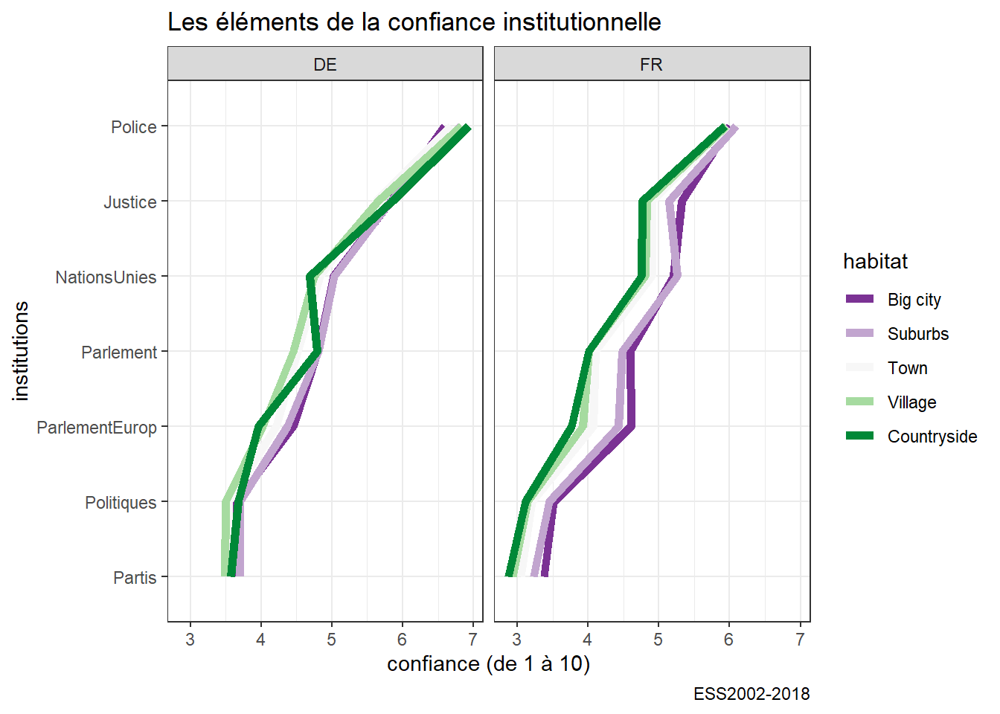
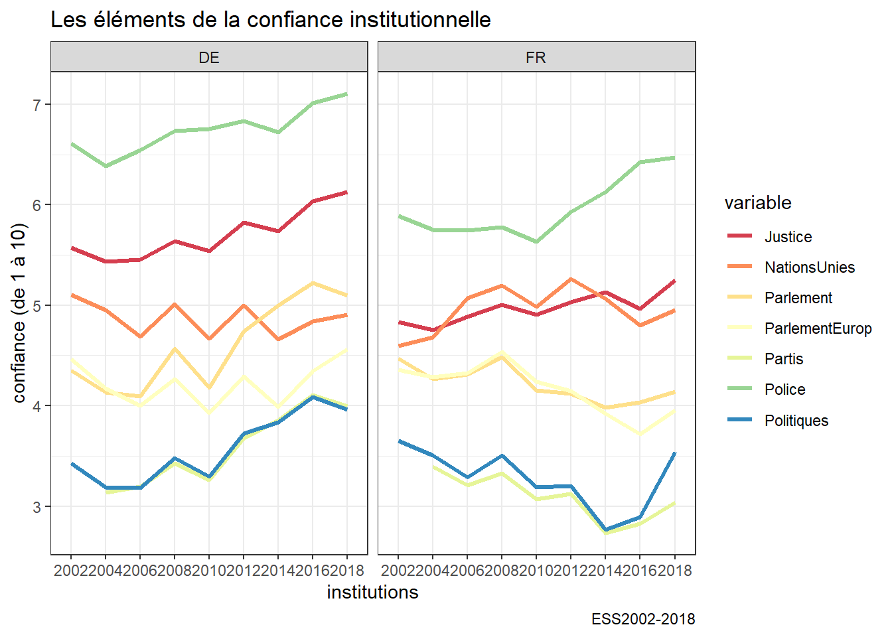
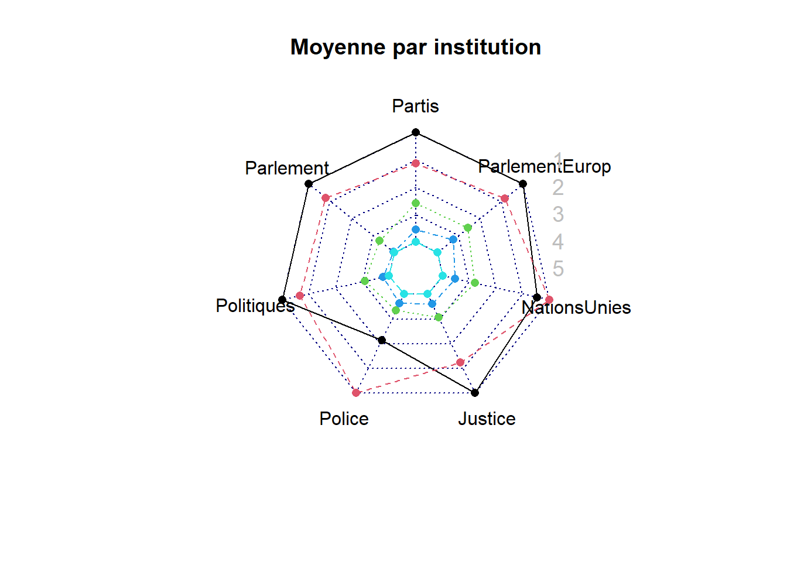
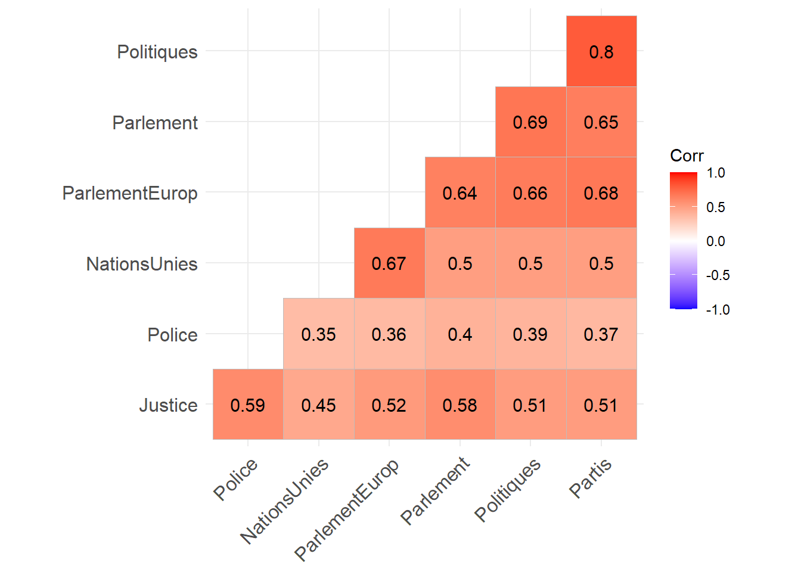
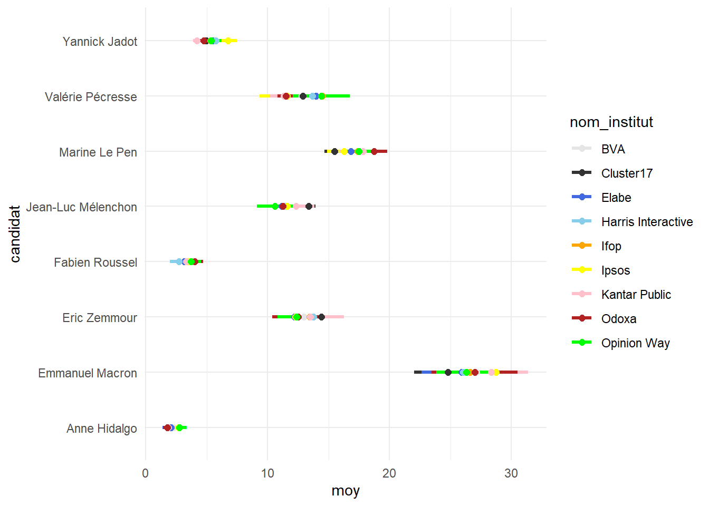
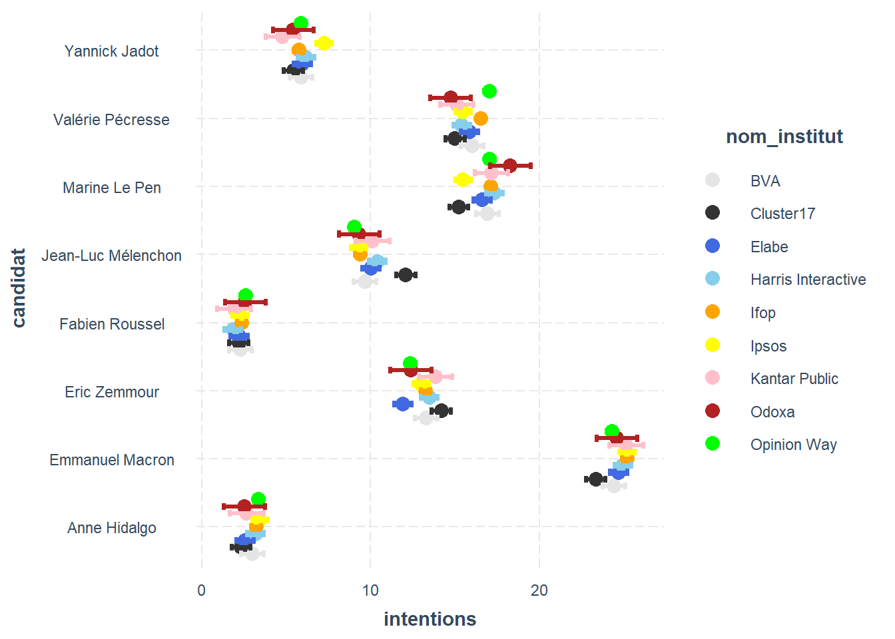
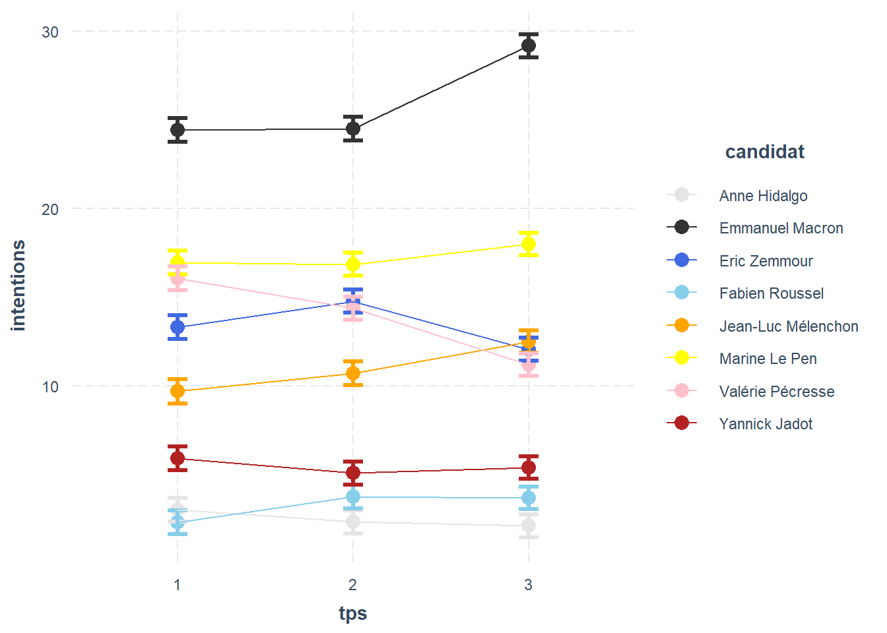

Chapitre 6 Analyse graphique multivariée
Dans ce chapitre, on généralise à des ensembles de variables.
6.1 La confiance institutionnelle, en détail
On veut reprénter 6 variables, correspondant à 5 types d’habitats et 2 pays.
df<-readRDS("./data/dfTrust.rds)")
rad<-df %>%
group_by (habitat,cntry) %>%
summarize(Partis=mean(Partis, na.rm=TRUE),
Parlement=mean(Parlement, na.rm=TRUE),
Politiques=mean(Politiques, na.rm=TRUE),
Police=mean(Police, na.rm=TRUE),
Justice=mean(Justice, na.rm=TRUE),
NationsUnies=mean(NationsUnies, na.rm=TRUE),
ParlementEurop=mean(ParlementEurop, na.rm=TRUE)) %>%
filter(!is.na(habitat)) %>%
gather(variable, value, -habitat, -cntry)
ggplot(rad, aes(x=reorder(variable, value),y=value, group=habitat))+
geom_line(aes(color=habitat), size=2)+
facet_grid(.~cntry) +coord_flip()+
scale_color_brewer(type="div",palette=3)+labs(title= "Les éléments de la confiance institutionnelle", caption="ESS2002-2018",y= "confiance (de 1 à 10)",x="institutions") 
Une autre variante qui donne l’évolution de l’évolution de les éléments de la confiance institutionnelle
rad<-df %>%
group_by (Year,cntry) %>%
summarize(Partis=mean(Partis, na.rm=TRUE),
Parlement=mean(Parlement, na.rm=TRUE),
Politiques=mean(Politiques, na.rm=TRUE),
Police=mean(Police, na.rm=TRUE),
Justice=mean(Justice, na.rm=TRUE),
NationsUnies=mean(NationsUnies, na.rm=TRUE),
ParlementEurop=mean(ParlementEurop, na.rm=TRUE)) %>%
gather(variable, value, -Year, -cntry)
ggplot(rad, aes(x=Year,y=value, group=variable))+
geom_line(aes(color=variable), size=1.2)+
facet_wrap(.~cntry, nrow=1) +
scale_color_brewer(palette="Spectral")+labs(title= "Les éléments de la confiance institutionnelle", caption="ESS2002-2018",y= "confiance (de 1 à 10)",x="institutions") 
La différence entre les deux pays est claire, la rupture est accusée plus fortement en France qu’en Allemagne. L’explication n’est sans doute pas culturelle mais démographique, un coup d’oeil à la carte des densité permet de comprendre mieux : https://www.populationdata.net/cartes/allemagne-france-densite-de-population-2011/.
On pourra tenté un graphe en radar. Mais il n’est pas si convaincant.
library(fmsb)
rad<-df %>% filter(cntry=="FR") %>%
group_by (habitat) %>%
summarize(Partis=mean(Partis, na.rm=TRUE),
Parlement=mean(Parlement, na.rm=TRUE),
Politiques=mean(Politiques, na.rm=TRUE),
Police=mean(Police, na.rm=TRUE),
Justice=mean(Justice, na.rm=TRUE),
NationsUnies=mean(NationsUnies, na.rm=TRUE),
ParlementEurop=mean(ParlementEurop, na.rm=TRUE)) %>%
filter(!is.na(habitat)) %>%
dplyr::select(-habitat)
#on doit indiquer les valeurs minimale et maximale - la fonction rep permet de repeter (ici 7 fois pour les 7 variables/col)
data <- rbind(rep(7,7) , rep(3,7) , rad)
#l'autre method c'est ce choisir maxmin=FALSE
#rownames(rad) <- c("big city", "suburbs" ,"town","village", "countryside")
radarchart(rad, axistype=0, seg=4, title="Moyenne par institution", maxmin=FALSE)
legend(x=0.7, y=1, legend = rownames(rad), bty = "n",text.col = "grey", cex=1.2, pt.cex=3)
6.2 Table de corrélation
Comparer les moyennes est une chose, on souhaiter en plus savoir quelle structure de corrélation les caractérisent. Rien de plus simple
library(ggcorrplot)
df<-readRDS("./data/dfTrust.rds)")%>%filter(Year==2018)
foo<-df %>% dplyr::select(NationsUnies,ParlementEurop, Parlement, Justice, Police, Politiques, Partis) %>%
drop_na()
r<-cor(foo)
ggcorrplot(r, hc.order = TRUE, type = "lower",
lab = TRUE)
g<-paste0("./plot/g1",".jpg")
ggsave(g,plot=last_plot(), width = 27, height = 19, units = "cm")6.3 Un cas plus complexe : présidentielle2020
Nsppolls cumulent les sondages publiés des grands instituts. On utilise ces données , ainsi qu’une boucle, pour explorer différents paramètre d’un modèle de lissage.
Le but : mieux percevoir les tendance par une sorte de méta-analyse des différents sondages :
6.4 une boucle pour produire de multiple graphe en variant un paramètre
library(lubridate)
alph<-.5
for (alph in seq(from=0, to= 1, by=.05)){
df_pol <- read_delim("https://raw.githubusercontent.com/nsppolls/nsppolls/master/presidentielle.csv",
delim = ",", escape_double = FALSE, trim_ws = TRUE)%>%
filter(tour=="Premier tour") %>%filter(candidat=="Eric Zemmour"|
candidat== "Marine Le Pen"|
candidat== "Emmanuel Macron"|
candidat== "Jean-Luc Mélenchon"|
candidat== "Yannick Jadot"|
candidat== "Valérie Pécresse"|
candidat=="Fabien Roussel"|
candidat=="Anne Hidalgo") %>%
filter(fin_enquete>ymd("2022-01-09")) # on commence en septembre , octobre est-il meilleur ?
table(df_pol$candidat)
SensiP1<-c("pink", "orange", "gray20", "red","firebrick", "Royalblue", " skyblue", "Chartreuse")
ggplot(df_pol, aes(y=intentions, x=fin_enquete))+
geom_point(aes(color=candidat), size=.5, alpha=1-alph)+
geom_smooth(span = alph, aes(col=candidat,fill=candidat), alpha=0.2)+
scale_color_manual(values=SensiP1)+
scale_fill_manual(values=SensiP1)+
labs(title= "Evolution des intentions de vote #présidentielle2022 1er tour",
subtitle =paste("Lissage méthode loess. alpha=",alph, " - ci=95%"),
caption = "data @nsppolls viz @benavent",
x=NULL)+theme_minimal()+scale_x_date(date_breaks = "1 month", date_minor_breaks = "1 week",
date_labels = "%B")
sondage_nsppolls<-paste0("./nsppolls/sondage_nsppolls", alph*20, ".jpg")
ggsave(sondage_nsppolls,plot=last_plot(), width = 27, height = 19, units = "cm")
}
n<-df_pol%>%
mutate(n=1)%>%
group_by(id)%>%summarise(n=sum(n))
#nombre de sondage
n<-nrow(n)Pour créer le gif on emplie magick. On a pris soin de sauvegarder les graphes dans un répertoire propre, ça facilite la lecture en boucle et la fabrication du gif.
library(magick)
#gif
#on constitue une liste des noms des fichier *.jpg que l'on veut associer
frames <- paste0("./nsppolls/","sondage_nsppolls", 0:20,".jpg")
#on lit et on stoke dans m les images
m <- image_read(frames)
#on fabrique et on sauvergarde le gif
m <- image_animate(m, fps=1)
image_write(m, "./plot/sondages_lissage.gif")6.4.1 effet sondeur
pour anticiper sur le chapitre suivant
foo<-df_pol%>%
dplyr::select(candidat, intentions, fin_enquete, echantillon,nom_institut)%>%
group_by(nom_institut, candidat)%>%
summarise(moy=mean(intentions, na.rm=TRUE),
std=sd(intentions, na.rm=TRUE))
SensiP2<-c("gray90","gray20", "Royalblue", "skyblue", "orange", "yellow", "pink", "firebrick", "green", "gold1", "gold2")
g<-ggplot(foo,aes(x=candidat,y=moy))+
geom_segment(aes(x = candidat,
y = -std+moy,
xend = candidat,
yend = std+moy,
color = nom_institut), size=1.2)+
geom_point(aes(color=nom_institut), size=2)+
scale_color_manual(values = SensiP2)+
theme_minimal()+
coord_flip()
g
6.5 Modéliser le biais du sondeur
http://www.stat.yale.edu/Courses/1997-98/101/anovareg.htm
df_pol$tps<-2
df_pol$tps[df_pol$fin_enquete < ymd("2022-01-31")]<-1
df_pol$tps[df_pol$fin_enquete > ymd("2022-03-01")]<-3
df_pol$tps<- as.factor(df_pol$tps)
fit1<- lm(intentions~candidat*tps,data=df_pol)
anova(fit1)## Analysis of Variance Table
##
## Response: intentions
## Df Sum Sq Mean Sq F value Pr(>F)
## candidat 7 122735 17533.6 10705.9435 < 2.2e-16 ***
## tps 2 25 12.7 7.7658 0.0004363 ***
## candidat:tps 14 4534 323.9 197.7554 < 2.2e-16 ***
## Residuals 2096 3433 1.6
## ---
## Signif. codes: 0 '***' 0.001 '**' 0.01 '*' 0.05 '.' 0.1 ' ' 1fit2<- lm(intentions~candidat*tps+candidat*nom_institut,data=df_pol)
anova(fit2)## Analysis of Variance Table
##
## Response: intentions
## Df Sum Sq Mean Sq F value Pr(>F)
## candidat 7 122735 17533.6 12742.2074 < 2.2e-16 ***
## tps 2 25 12.7 9.2428 0.000101 ***
## nom_institut 10 25 2.5 1.8283 0.051096 .
## candidat:tps 14 4534 323.9 235.3684 < 2.2e-16 ***
## candidat:nom_institut 70 633 9.0 6.5768 < 2.2e-16 ***
## Residuals 2016 2774 1.4
## ---
## Signif. codes: 0 '***' 0.001 '**' 0.01 '*' 0.05 '.' 0.1 ' ' 1anova(fit1,fit2)## Analysis of Variance Table
##
## Model 1: intentions ~ candidat * tps
## Model 2: intentions ~ candidat * tps + candidat * nom_institut
## Res.Df RSS Df Sum of Sq F Pr(>F)
## 1 2096 3432.7
## 2 2016 2774.1 80 658.65 5.9832 < 2.2e-16 ***
## ---
## Signif. codes: 0 '***' 0.001 '**' 0.01 '*' 0.05 '.' 0.1 ' ' 1summary(fit1)##
## Call:
## lm(formula = intentions ~ candidat * tps, data = df_pol)
##
## Residuals:
## Min 1Q Median 3Q Max
## -5.2585 -0.6350 -0.0278 0.6021 5.6493
##
## Coefficients:
## Estimate Std. Error t value Pr(>|t|)
## (Intercept) 3.1765 0.1792 17.726 < 2e-16 ***
## candidatEmmanuel Macron 21.5392 0.2534 84.992 < 2e-16 ***
## candidatEric Zemmour 9.7549 0.2534 38.492 < 2e-16 ***
## candidatFabien Roussel -0.8039 0.2534 -3.172 0.001535 **
## candidatJean-Luc Mélenchon 6.4118 0.2534 25.300 < 2e-16 ***
## candidatMarine Le Pen 13.7353 0.2534 54.198 < 2e-16 ***
## candidatValérie Pécresse 13.2255 0.2534 52.187 < 2e-16 ***
## candidatYannick Jadot 2.7255 0.2534 10.755 < 2e-16 ***
## tps2 -0.6765 0.2342 -2.888 0.003915 **
## tps3 -0.9765 0.2089 -4.674 3.14e-06 ***
## candidatEmmanuel Macron:tps2 0.6844 0.3312 2.066 0.038934 *
## candidatEric Zemmour:tps2 2.0645 0.3312 6.233 5.52e-10 ***
## candidatFabien Roussel:tps2 2.1511 0.3312 6.494 1.04e-10 ***
## candidatJean-Luc Mélenchon:tps2 1.6438 0.3312 4.963 7.52e-07 ***
## candidatMarine Le Pen:tps2 0.5842 0.3312 1.764 0.077955 .
## candidatValérie Pécresse:tps2 -0.9616 0.3312 -2.903 0.003734 **
## candidatYannick Jadot:tps2 -0.1630 0.3312 -0.492 0.622725
## candidatEmmanuel Macron:tps3 4.6819 0.2955 15.847 < 2e-16 ***
## candidatEric Zemmour:tps3 -1.0570 0.2955 -3.578 0.000355 ***
## candidatFabien Roussel:tps3 2.0919 0.2955 7.080 1.95e-12 ***
## candidatJean-Luc Mélenchon:tps3 5.1319 0.2955 17.370 < 2e-16 ***
## candidatMarine Le Pen:tps3 3.4154 0.2955 11.560 < 2e-16 ***
## candidatValérie Pécresse:tps3 -4.8670 0.2955 -16.473 < 2e-16 ***
## candidatYannick Jadot:tps3 0.4724 0.2955 1.599 0.109995
## ---
## Signif. codes: 0 '***' 0.001 '**' 0.01 '*' 0.05 '.' 0.1 ' ' 1
##
## Residual standard error: 1.28 on 2096 degrees of freedom
## Multiple R-squared: 0.9737, Adjusted R-squared: 0.9735
## F-statistic: 3379 on 23 and 2096 DF, p-value: < 2.2e-16summary(fit2)##
## Call:
## lm(formula = intentions ~ candidat * tps + candidat * nom_institut,
## data = df_pol)
##
## Residuals:
## Min 1Q Median 3Q Max
## -4.7981 -0.5456 -0.0272 0.5924 5.2019
##
## Coefficients:
## Estimate Std. Error
## (Intercept) 3.39409 1.18971
## candidatEmmanuel Macron 20.60082 1.68251
## candidatEric Zemmour 10.59844 1.68251
## candidatFabien Roussel -2.19508 1.68251
## candidatJean-Luc Mélenchon 11.04593 1.68251
## candidatMarine Le Pen 15.30968 1.68251
## candidatValérie Pécresse 7.55835 1.68251
## candidatYannick Jadot 2.30826 1.68251
## tps2 -0.68106 0.21565
## tps3 -0.99409 0.19847
## nom_institutBVA -0.30224 1.23753
## nom_institutCluster17 -0.84531 1.21657
## nom_institutElabe -0.71509 1.21215
## nom_institutHarris Interactive -0.18347 1.21291
## nom_institutIfop -0.18249 1.18474
## nom_institutIpsos -0.08904 1.19038
## nom_institutKantar Public -0.47826 1.31223
## nom_institutOdoxa -0.67101 1.35576
## nom_institutOpinion Way -0.04925 1.18126
## nom_institutYouGov -1.40000 1.65893
## candidatEmmanuel Macron:tps2 0.73921 0.30498
## candidatEric Zemmour:tps2 2.12294 0.30498
## candidatFabien Roussel:tps2 2.12788 0.30498
## candidatJean-Luc Mélenchon:tps2 1.71555 0.30498
## candidatMarine Le Pen:tps2 0.60025 0.30498
## candidatValérie Pécresse:tps2 -0.97779 0.30498
## candidatYannick Jadot:tps2 -0.15932 0.30498
## candidatEmmanuel Macron:tps3 4.79918 0.28068
## candidatEric Zemmour:tps3 -0.99844 0.28068
## candidatFabien Roussel:tps3 2.09508 0.28068
## candidatJean-Luc Mélenchon:tps3 5.15407 0.28068
## candidatMarine Le Pen:tps3 3.59032 0.28068
## candidatValérie Pécresse:tps3 -4.65835 0.28068
## candidatYannick Jadot:tps3 0.29174 0.28068
## candidatEmmanuel Macron:nom_institutBVA 0.75768 1.75014
## candidatEric Zemmour:nom_institutBVA -0.46013 1.75014
## candidatFabien Roussel:nom_institutBVA 1.43661 1.75014
## candidatJean-Luc Mélenchon:nom_institutBVA -4.47432 1.75014
## candidatMarine Le Pen:nom_institutBVA -1.61439 1.75014
## candidatValérie Pécresse:nom_institutBVA 5.43117 1.75014
## candidatYannick Jadot:nom_institutBVA 0.47709 1.75014
## candidatEmmanuel Macron:nom_institutCluster17 0.21696 1.72049
## candidatEric Zemmour:nom_institutCluster17 0.93708 1.72049
## candidatFabien Roussel:nom_institutCluster17 1.75386 1.72049
## candidatJean-Luc Mélenchon:nom_institutCluster17 -1.72026 1.72049
## candidatMarine Le Pen:nom_institutCluster17 -2.63348 1.72049
## candidatValérie Pécresse:nom_institutCluster17 5.22876 1.72049
## candidatYannick Jadot:nom_institutCluster17 0.59139 1.72049
## candidatEmmanuel Macron:nom_institutElabe 1.38103 1.71424
## candidatEric Zemmour:nom_institutElabe -1.35629 1.71424
## candidatFabien Roussel:nom_institutElabe 1.64477 1.71424
## candidatJean-Luc Mélenchon:nom_institutElabe -3.52444 1.71424
## candidatMarine Le Pen:nom_institutElabe -0.78677 1.71424
## candidatValérie Pécresse:nom_institutElabe 5.34773 1.71424
## candidatYannick Jadot:nom_institutElabe 0.80139 1.71424
## candidatEmmanuel Macron:nom_institutHarris Interactive 1.05598 1.71531
## candidatEric Zemmour:nom_institutHarris Interactive -0.57494 1.71531
## candidatFabien Roussel:nom_institutHarris Interactive 0.83821 1.71531
## candidatJean-Luc Mélenchon:nom_institutHarris Interactive -3.70231 1.71531
## candidatMarine Le Pen:nom_institutHarris Interactive -0.96863 1.71531
## candidatValérie Pécresse:nom_institutHarris Interactive 4.65034 1.71531
## candidatYannick Jadot:nom_institutHarris Interactive 0.56962 1.71531
## candidatEmmanuel Macron:nom_institutIfop 1.34434 1.67547
## candidatEric Zemmour:nom_institutIfop -0.55201 1.67547
## candidatFabien Roussel:nom_institutIfop 1.38693 1.67547
## candidatJean-Luc Mélenchon:nom_institutIfop -4.84893 1.67547
## candidatMarine Le Pen:nom_institutIfop -1.37146 1.67547
## candidatValérie Pécresse:nom_institutIfop 5.78598 1.67547
## candidatYannick Jadot:nom_institutIfop 0.22809 1.67547
## candidatEmmanuel Macron:nom_institutIpsos 0.79936 1.68345
## candidatEric Zemmour:nom_institutIpsos -0.87532 1.68345
## candidatFabien Roussel:nom_institutIpsos 1.26446 1.68345
## candidatJean-Luc Mélenchon:nom_institutIpsos -4.62283 1.68345
## candidatMarine Le Pen:nom_institutIpsos -2.71909 1.68345
## candidatValérie Pécresse:nom_institutIpsos 4.63358 1.68345
## candidatYannick Jadot:nom_institutIpsos 1.44225 1.68345
## candidatEmmanuel Macron:nom_institutKantar Public 1.11499 1.85577
## candidatEric Zemmour:nom_institutKantar Public 0.49465 1.85577
## candidatFabien Roussel:nom_institutKantar Public 1.34180 1.85577
## candidatJean-Luc Mélenchon:nom_institutKantar Public -4.09037 1.85577
## candidatMarine Le Pen:nom_institutKantar Public -1.02748 1.85577
## candidatValérie Pécresse:nom_institutKantar Public 4.67986 1.85577
## candidatYannick Jadot:nom_institutKantar Public -0.11224 1.85577
## candidatEmmanuel Macron:nom_institutOdoxa 1.45332 1.91734
## candidatEric Zemmour:nom_institutOdoxa -1.47379 1.91734
## candidatFabien Roussel:nom_institutOdoxa 1.92240 1.91734
## candidatJean-Luc Mélenchon:nom_institutOdoxa -4.05383 1.91734
## candidatMarine Le Pen:nom_institutOdoxa 0.76336 1.91734
## candidatValérie Pécresse:nom_institutOdoxa 4.03981 1.91734
## candidatYannick Jadot:nom_institutOdoxa 0.55035 1.91734
## candidatEmmanuel Macron:nom_institutOpinion Way 0.50026 1.67056
## candidatEric Zemmour:nom_institutOpinion Way -1.46076 1.67056
## candidatFabien Roussel:nom_institutOpinion Way 1.44706 1.67056
## candidatJean-Luc Mélenchon:nom_institutOpinion Way -5.45426 1.67056
## candidatMarine Le Pen:nom_institutOpinion Way -1.84075 1.67056
## candidatValérie Pécresse:nom_institutOpinion Way 6.12136 1.67056
## candidatYannick Jadot:nom_institutOpinion Way 0.33856 1.67056
## candidatEmmanuel Macron:nom_institutYouGov 0.60000 2.34608
## candidatEric Zemmour:nom_institutYouGov -1.60000 2.34608
## candidatFabien Roussel:nom_institutYouGov 1.10000 2.34608
## candidatJean-Luc Mélenchon:nom_institutYouGov -2.20000 2.34608
## candidatMarine Le Pen:nom_institutYouGov 5.10000 2.34608
## candidatValérie Pécresse:nom_institutYouGov 4.10000 2.34608
## candidatYannick Jadot:nom_institutYouGov 2.40000 2.34608
## t value Pr(>|t|)
## (Intercept) 2.853 0.004377 **
## candidatEmmanuel Macron 12.244 < 2e-16 ***
## candidatEric Zemmour 6.299 3.66e-10 ***
## candidatFabien Roussel -1.305 0.192163
## candidatJean-Luc Mélenchon 6.565 6.59e-11 ***
## candidatMarine Le Pen 9.099 < 2e-16 ***
## candidatValérie Pécresse 4.492 7.44e-06 ***
## candidatYannick Jadot 1.372 0.170242
## tps2 -3.158 0.001611 **
## tps3 -5.009 5.96e-07 ***
## nom_institutBVA -0.244 0.807081
## nom_institutCluster17 -0.695 0.487241
## nom_institutElabe -0.590 0.555298
## nom_institutHarris Interactive -0.151 0.879779
## nom_institutIfop -0.154 0.877598
## nom_institutIpsos -0.075 0.940383
## nom_institutKantar Public -0.364 0.715551
## nom_institutOdoxa -0.495 0.620703
## nom_institutOpinion Way -0.042 0.966747
## nom_institutYouGov -0.844 0.398816
## candidatEmmanuel Macron:tps2 2.424 0.015445 *
## candidatEric Zemmour:tps2 6.961 4.55e-12 ***
## candidatFabien Roussel:tps2 6.977 4.07e-12 ***
## candidatJean-Luc Mélenchon:tps2 5.625 2.11e-08 ***
## candidatMarine Le Pen:tps2 1.968 0.049184 *
## candidatValérie Pécresse:tps2 -3.206 0.001367 **
## candidatYannick Jadot:tps2 -0.522 0.601458
## candidatEmmanuel Macron:tps3 17.098 < 2e-16 ***
## candidatEric Zemmour:tps3 -3.557 0.000383 ***
## candidatFabien Roussel:tps3 7.464 1.24e-13 ***
## candidatJean-Luc Mélenchon:tps3 18.363 < 2e-16 ***
## candidatMarine Le Pen:tps3 12.791 < 2e-16 ***
## candidatValérie Pécresse:tps3 -16.597 < 2e-16 ***
## candidatYannick Jadot:tps3 1.039 0.298749
## candidatEmmanuel Macron:nom_institutBVA 0.433 0.665115
## candidatEric Zemmour:nom_institutBVA -0.263 0.792645
## candidatFabien Roussel:nom_institutBVA 0.821 0.411826
## candidatJean-Luc Mélenchon:nom_institutBVA -2.557 0.010644 *
## candidatMarine Le Pen:nom_institutBVA -0.922 0.356411
## candidatValérie Pécresse:nom_institutBVA 3.103 0.001940 **
## candidatYannick Jadot:nom_institutBVA 0.273 0.785186
## candidatEmmanuel Macron:nom_institutCluster17 0.126 0.899664
## candidatEric Zemmour:nom_institutCluster17 0.545 0.586049
## candidatFabien Roussel:nom_institutCluster17 1.019 0.308139
## candidatJean-Luc Mélenchon:nom_institutCluster17 -1.000 0.317496
## candidatMarine Le Pen:nom_institutCluster17 -1.531 0.126012
## candidatValérie Pécresse:nom_institutCluster17 3.039 0.002403 **
## candidatYannick Jadot:nom_institutCluster17 0.344 0.731085
## candidatEmmanuel Macron:nom_institutElabe 0.806 0.420553
## candidatEric Zemmour:nom_institutElabe -0.791 0.428924
## candidatFabien Roussel:nom_institutElabe 0.959 0.337434
## candidatJean-Luc Mélenchon:nom_institutElabe -2.056 0.039913 *
## candidatMarine Le Pen:nom_institutElabe -0.459 0.646309
## candidatValérie Pécresse:nom_institutElabe 3.120 0.001837 **
## candidatYannick Jadot:nom_institutElabe 0.467 0.640200
## candidatEmmanuel Macron:nom_institutHarris Interactive 0.616 0.538214
## candidatEric Zemmour:nom_institutHarris Interactive -0.335 0.737521
## candidatFabien Roussel:nom_institutHarris Interactive 0.489 0.625133
## candidatJean-Luc Mélenchon:nom_institutHarris Interactive -2.158 0.031015 *
## candidatMarine Le Pen:nom_institutHarris Interactive -0.565 0.572343
## candidatValérie Pécresse:nom_institutHarris Interactive 2.711 0.006763 **
## candidatYannick Jadot:nom_institutHarris Interactive 0.332 0.739863
## candidatEmmanuel Macron:nom_institutIfop 0.802 0.422437
## candidatEric Zemmour:nom_institutIfop -0.329 0.741837
## candidatFabien Roussel:nom_institutIfop 0.828 0.407892
## candidatJean-Luc Mélenchon:nom_institutIfop -2.894 0.003844 **
## candidatMarine Le Pen:nom_institutIfop -0.819 0.413138
## candidatValérie Pécresse:nom_institutIfop 3.453 0.000565 ***
## candidatYannick Jadot:nom_institutIfop 0.136 0.891729
## candidatEmmanuel Macron:nom_institutIpsos 0.475 0.634955
## candidatEric Zemmour:nom_institutIpsos -0.520 0.603149
## candidatFabien Roussel:nom_institutIpsos 0.751 0.452670
## candidatJean-Luc Mélenchon:nom_institutIpsos -2.746 0.006085 **
## candidatMarine Le Pen:nom_institutIpsos -1.615 0.106425
## candidatValérie Pécresse:nom_institutIpsos 2.752 0.005968 **
## candidatYannick Jadot:nom_institutIpsos 0.857 0.391697
## candidatEmmanuel Macron:nom_institutKantar Public 0.601 0.548025
## candidatEric Zemmour:nom_institutKantar Public 0.267 0.789843
## candidatFabien Roussel:nom_institutKantar Public 0.723 0.469738
## candidatJean-Luc Mélenchon:nom_institutKantar Public -2.204 0.027628 *
## candidatMarine Le Pen:nom_institutKantar Public -0.554 0.579867
## candidatValérie Pécresse:nom_institutKantar Public 2.522 0.011753 *
## candidatYannick Jadot:nom_institutKantar Public -0.060 0.951779
## candidatEmmanuel Macron:nom_institutOdoxa 0.758 0.448546
## candidatEric Zemmour:nom_institutOdoxa -0.769 0.442182
## candidatFabien Roussel:nom_institutOdoxa 1.003 0.316155
## candidatJean-Luc Mélenchon:nom_institutOdoxa -2.114 0.034612 *
## candidatMarine Le Pen:nom_institutOdoxa 0.398 0.690574
## candidatValérie Pécresse:nom_institutOdoxa 2.107 0.035242 *
## candidatYannick Jadot:nom_institutOdoxa 0.287 0.774112
## candidatEmmanuel Macron:nom_institutOpinion Way 0.299 0.764623
## candidatEric Zemmour:nom_institutOpinion Way -0.874 0.381997
## candidatFabien Roussel:nom_institutOpinion Way 0.866 0.386475
## candidatJean-Luc Mélenchon:nom_institutOpinion Way -3.265 0.001113 **
## candidatMarine Le Pen:nom_institutOpinion Way -1.102 0.270647
## candidatValérie Pécresse:nom_institutOpinion Way 3.664 0.000254 ***
## candidatYannick Jadot:nom_institutOpinion Way 0.203 0.839420
## candidatEmmanuel Macron:nom_institutYouGov 0.256 0.798174
## candidatEric Zemmour:nom_institutYouGov -0.682 0.495325
## candidatFabien Roussel:nom_institutYouGov 0.469 0.639216
## candidatJean-Luc Mélenchon:nom_institutYouGov -0.938 0.348494
## candidatMarine Le Pen:nom_institutYouGov 2.174 0.029834 *
## candidatValérie Pécresse:nom_institutYouGov 1.748 0.080687 .
## candidatYannick Jadot:nom_institutYouGov 1.023 0.306439
## ---
## Signif. codes: 0 '***' 0.001 '**' 0.01 '*' 0.05 '.' 0.1 ' ' 1
##
## Residual standard error: 1.173 on 2016 degrees of freedom
## Multiple R-squared: 0.9788, Adjusted R-squared: 0.9777
## F-statistic: 902.8 on 103 and 2016 DF, p-value: < 2.2e-16library(jtools)
library(interactions)
cat_plot(fit2, pred=candidat,modx= nom_institut, color.class="Spectral")+
scale_color_manual(values = SensiP2)+coord_flip()
cat_plot(fit2, pred= tps,modx=candidat, color.class="Spectral", dodge.width=0)+
scale_color_manual(values = SensiP2)+geom_line(aes(color=candidat))